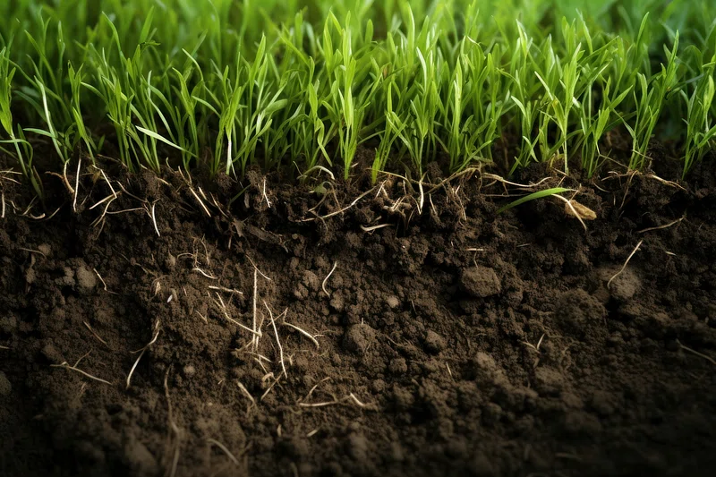

Introduction to Soil
Soil is a natural resource that forms the foundation of all terrestrial ecosystems. It is made up of mineral particles, organic matter, water, and air. Soil plays a critical role in supporting plant life, and thus, it is essential for agriculture, forestry, and environmental sustainability. Understanding the composition and properties of soil is vital for efficient land management and combating soil-related challenges like erosion, degradation, and pollution.
Different Types of Soil
Soil comes in various types, each with unique characteristics that make them suitable for specific agricultural and environmental uses. The most common types of soil include:
- Clay Soil: Heavy and dense, retains water but drains poorly, and often sticky when wet.
- Sandy Soil: Loose and gritty, drains well but does not hold nutrients well.
- Loam Soil: Ideal for plant growth, a perfect mixture of sand, silt, and clay.
- Silty Soil: Soft and smooth, retains moisture well but can become compacted easily.
- Peat Soil: Rich in organic material, often found in wet environments and excellent for plant growth.
Uses of Soil in Different Sectors
Soil is an essential resource that serves many critical roles across various industries:
- Agriculture: Soil is the foundation of agriculture, providing the nutrients necessary for crops.
- Construction: Soil plays a vital role in construction for creating a stable foundation for buildings and roads.
- Environmental Science: Soil helps filter and clean water, store carbon, and maintain ecosystems.
- Forestry: Soil is the primary medium for tree roots, influencing forest growth and health.
- Waste Management: Soil helps in filtering out contaminants and can be used in landfills or to reclaim contaminated land.